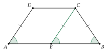
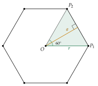
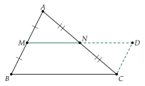
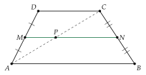
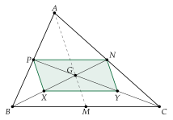

Un trapecio es un cuadrilátero con exactamente un par de lados opuestos paralelos, llamados bases; los otros dos son los lados laterales. Un trapecio es isósceles si sus lados laterales son congruentes, y rectángulo si un lado lateral es perpendicular a las bases.
En un trapecio ABCD con bases AB y CD, son equivalentes:
el trapecio es isósceles (AD=BC);
los ángulos de una misma base son congruentes (∠A≅∠B);
las diagonales son congruentes (AC=BD).
(i)⇒(ii) Supongamos AB>CD y tracemos por C la paralela a AD, que corta a AB en E. Entonces AECD es un paralelogramo, EC=AD=BC, y △ECB es isósceles: ∠CEB≅∠B. Por correspondientes, ∠CEB≅∠A. Luego ∠A≅∠B.

(ii)⇒(iii) Si ∠A≅∠B, con la construcción anterior ∠CEB≅∠A≅∠B, así que EC=BC y AD=BC. Por L-A-L, △DAB≅△CBA y BD=AC.
(iii)⇒(i) Sean H y K los pies de las perpendiculares desde D y C a AB. Por la distancia entre paralelas, DH=CK. Los triángulos rectángulos △DHB y △CKA son congruentes por hipotenusa-cateto, así que ∠DBA≅∠CAB, y por L-A-L △DAB≅△CBA; luego AD=BC.
En todo polígono regular existe un único punto O, llamado centro, que equidista de todos los vértices y de todos los lados.
Sea P1P2⋯Pn regular y sea O el punto donde se cortan las bisectrices de ∠P1 y ∠P2 (se cortan porque sus ángulos con P1P2 suman menos de 180∘).
Como ∠P1≅∠P2, sus mitades son congruentes y △OP1P2 es isósceles: OP1=OP2.
Ahora △OP1P2≅△OP3P2 por L-A-L (P1P2=P3P2, ∠OP2P1≅∠OP2P3, OP2 común), así que OP3=OP1 y ∠OP3P2≅∠OP1P2, que es la mitad de ∠P3: OP3 es bisectriz de ∠P3.
Repitiendo el argumento vértice por vértice, OP1=OP2=⋯=OPn y todos los triángulos △OPiPi+1 son congruentes.
Sus alturas desde O son entonces iguales: O equidista de los lados.
La unicidad se sigue de que el centro tiene que estar en la bisectriz de cada ángulo (Teorema 3.8.2).
En un polígono regular de centro O:
el radio es la distancia r=OPi del centro a un vértice;
la apotema es la distancia a del centro a un lado; su pie es el punto medio del lado;
el ángulo central es ∠PiOPi+1, y mide n360∘.

El segmento que une los puntos medios de dos lados de un triángulo es paralelo al tercer lado y mide la mitad de él.
Sea △ABC y sean M, N los puntos medios de AB y AC. Sea D el punto del rayo opuesto a NM con ND=NM.

| 1. | AN≅NC, MN≅ND, ∠ANM≅∠CND | Punto medio, construcción, opuestos por el vértice |
| 2. | △ANM≅△CND | L-A-L |
| 3. | CD=AM=MB y ∠NAM≅∠NCD | Partes correspondientes; M punto medio |
| 4. | CD∥AB, es decir, CD∥MB | (3): alternos internos congruentes |
| 5. | MBCD es un paralelogramo | (3) y (4): MB y CD congruentes y paralelos (Teorema 4.2.3) |
| 6. | MN∥BC y MD=BC | Lados opuestos del paralelogramo |
| 7. | MN=21MD=21BC | N es punto medio de MD |
Arrastre los vértices: el segmento que une los puntos medios es paralelo a AB y mide exactamente la mitad.
La recta que pasa por el punto medio de un lado de un triángulo y es paralela a otro lado, corta al tercer lado en su punto medio.
Sea M el punto medio de AB y r la paralela a BC por M. Sea N el punto medio de AC. Por el teorema de la base media, MN∥BC. Por el postulado de Playfair, MN=r; luego r pasa por N.
Los tres segmentos que unen los puntos medios de los lados de un triángulo lo dividen en cuatro triángulos congruentes.
En un trapecio, el segmento que une los puntos medios de los lados laterales (la base media) es paralelo a las bases y mide su semisuma: MN=2AB+CD.
Sea ABCD con AB∥CD, M el punto medio de AD y N el de BC.
Sea P el punto medio de la diagonal AC.

En △ACD, la base media es MP: MP∥CD y MP=21CD.
En △CAB, la base media es PN: PN∥AB y PN=21AB.
Como AB∥CD, las rectas MP y PN son paralelas a AB y pasan por P; por Playfair son la misma recta, así que M, P, N son colineales, con P entre M y N (están en lados opuestos de AC).
Por tanto MN=MP+PN=2AB+CD.
Los puntos medios de los lados de cualquier cuadrilátero son los vértices de un paralelogramo.
Sean M,N,P,Q los puntos medios de AB,BC,CD,DA. En △ABC y △ACD, las bases medias MN y QP son paralelas a AC y miden 21AC. Por el Teorema 4.2.3(ii), MNPQ es un paralelogramo.
Las tres medianas de un triángulo se cortan en un punto G, llamado baricentro, que está en cada mediana a dos tercios de su longitud desde el vértice: si AM es una mediana, AG=32AM y GM=31AM.
Sean BN y CP las medianas desde B y C (N punto medio de AC, P de AB). Se cortan en un punto G interior al triángulo (barra transversal). Sean X y Y los puntos medios de BG y CG.

En △ABC, PN es base media: PN∥BC y PN=21BC. En △GBC, XY es base media: XY∥BC y XY=21BC. Por el Teorema 4.2.3(ii), PNYX es un paralelogramo, y sus diagonales PY y NX se bisecan en G. Así GN=GX=XB, es decir, BG=32BN; del mismo modo CG=32CP.
Hemos probado: dos medianas cualesquiera se cortan en el punto que está a dos tercios de cada una desde su vértice. Aplicando esto a las medianas BN y AM, se cortan en el punto de BN a dos tercios de B, que es G. Luego las tres medianas pasan por G y AG=32AM.
Arrastre los vértices: G divide cada mediana en razón 2 : 1.
En △ABC las medianas AM y BN miden 9 y 12 y son perpendiculares. Halle AB.
Con G el baricentro, AG=32⋅9=6 y BG=32⋅12=8. El triángulo △AGB es rectángulo en G, y por el teorema de Pitágoras (que probaremos en el capítulo 6), AB=36+64=10.
Próxima semana: Áreas y el teorema de Thales
© 2026 Santiago Alzate Suárez. Material de autoría propia; todos los derechos reservados. Se prohíbe su reproducción o distribución sin autorización, y todo uso debe citar al autor.